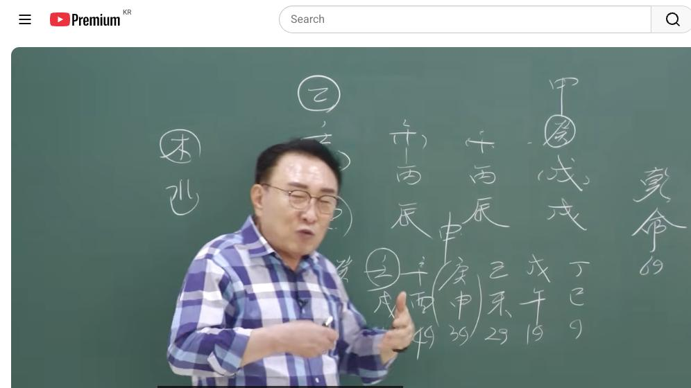

남촌물상TV 전체 문서 › 동영상 V0201
사주에 火가 많은 데 왜 부자가 될까?

| 문서 번호 | V0201 (동영상) |
|---|---|
| 영상 URL | https://www.youtube.com/watch?v=rUVXIYtUXlE |
| 영상 ID | rUVXIYtUXlE |
| 게시일 | 2026-07-23 |
| 길이 | 27:23 (1643초) |
| 조회수 | 356회 (수집 시점 기준) |
| 카테고리 | Education |
| 자막 | ko (자동생성) |
| 수집 시각 | 2026-08-30 17:03 (KST) |
영상 설명 (YouTube 설명 원문 그대로)
김대영 교수 사주상담
010-3139-6645 예약필수
사주상담 # 물상론 사주# 명리학# 성명학# 궁합# 택일#
물형상# 운명학# 남촌물상론#
전체 자막 (647구간 · 타임스탬프 클릭 시 해당 장면으로 이동)
[0:00]자, 안녕하세요.
[0:01]>> 안녕하세요.
[0:03]>> 자, 크게 오늘 날도 더운데 오시
[0:06]고생하셨습니다. 여러분 생각 보면이
[0:08]사주가 굉장히 무죄 뭐 돈이 별로
[0:10]없는 것이 같이 보여요. 그죠? 어
[0:13]근데이 사주 돈이 많은 사주예요.
[0:16]그 지금 여러분들이 얼름 생각하면 뭐
[0:19]자 보라 물도 없고 목도 없고 뭐
[0:21]돈이 많해 할 수도 있지만이 사주는
[0:24]돈이 굉장히 많은 사람입니다. 왜
[0:27]그런가를 지금부터 설명이 될테니까
[0:29]한번 자세하게 한번 봅시다. 자 첫째
[0:33]여기서 없는 오행이 뭐 없어요?
[0:36]목과
[0:36]>> 자 그러면 제일 필요한
[0:39]뭐하고 물이 없다 그 말이에요.
[0:42]특히 물이 없다는 것은 굉장히
[0:45]불합리한 조건이에요. 모든 것이
[0:47]그래서 오행이 다 사주에 따라서 물이
[0:51]없는 사람들이 굉장히 사주가 별로
[0:53]좋은 사주는 별로 없어요. 그래서
[0:55]물을 생산할 수 능력이 있냐 없냐를
[0:58]봐야 되고 또 끌어온 물이 있냐
[1:00]없냐를 보면 됩니다. 자, 그럼
[1:03]천관에서
[1:04]봅시다. 물을 끌어온 자가 뭐
[1:06]있어요?
[1:09]>> 자, 여기에서 자,이 계수를 끌고
[1:12]거죠.
[1:14]계수 끌고 와요.
[1:17]자, 그다음에 또 어디 있어요?
[1:19]>> 정.
[1:20]>> 진짜 많이 꿇은 여기지. 정화는
[1:22]임수로 끌어오잖아요. 큰 물을 끌고
[1:24]온다.
[1:26]그럼이 두 가지에서 그 저 어 기본
[1:29]생산성이 있는 거예요.이 사주는
[1:31]획기적인 것은이 두 개 관점이 있는
[1:34]거예요. 그런 법칙에서 무슨 얘기냐면
[1:37]자 무기 합 뭐예요? 기토죠. 잘
[1:40]보세요. 무합이 기토다.
[1:44]자 정림합이 뭐다? 을목이다.
[1:48]그러면이 답이 다 나온 거예요.
[1:51]가장 필요한 뭔가가 나올 수 있다.
[1:54]그러면 기토에서는 뭘 끌고 와?
[1:57]>> 자, 기토에서는 갑목을 끌고 와.
[2:01]그다음에 정리한 을목에서 뭘 끌고
[2:03]와?
[2:04]>> 경금을 끌고 오네.
[2:07]그러면은이 사람이 경금을 꾸는다는
[2:10]얘기는 쉽게 얘기해서 자기의 칼과 칼
[2:13]자루가 만들어진 거지. 이게
[2:16]건설이지.
[2:18]그럼이 사람 권설 천국 돈 버는
[2:19]사람이에요.
[2:22]자, 이해하셨죠? 자, 그다음
[2:25]그러면이 사주 이제에 물이라는 개념을
[2:29]다 해결했고 지지에서는 뭐예요? 물을
[2:33]만들실 수 있는 자가
[2:35]>> 유금이죠. 그러면 우리는 첫째 좋은
[2:37]것 뭔 문제는 뭐냐면 금은 물에서
[2:40]놀아야만이 돈이 되는 거예요. 가만히
[2:43]그냥 놔둬 있으면이 사람은 지금 금이
[2:45]돈 아니에요.
[2:46]>> 그죠? 금이 돈인데
[2:49]금원이 그냥 놔두면 돈이 안 돼요.
[2:52]금들이 활동을 해야 돈이 활동이
[2:54]돌아야 돈이 된다. 그런 의미적으로
[2:57]생각을 하셔도 된다 그 말이에요.
[2:59]자, 그러면
[3:02]여기서 이제에 천관에서 돈을 만드는
[3:05]자가 뭔냐 보면 알지.
[3:07]무슨 자예요? 자, 여기에서 끌어온
[3:11]자는 신금을 끌어오고 여기서 끌어온
[3:13]자는 신금을 끌어.
[3:15]자, 그러면이 사람은
[3:18]벌년에 자기가 끌어온 돈도 있지만
[3:22]내가 금을 돈을 벌려고 움직이면 뭐가
[3:25]생겨? 관이 생겼지. 물이
[3:27]생겼잖아요.
[3:29]그러니까 다 물이 생길 수 있는
[3:30]사주예요. 알고 보면 내놓고 보면.
[3:32]그러니까 내가 병화를 쓸 때와이
[3:36]정림합과이 갑목과를 쓸 때의 관계에
[3:40]따라서이 사람은 평생 묶어는 방법이
[3:43]계산이 된다.
[3:44]>> 이렇게 보시면 정확하게 알 수 있는
[3:46]거예요.
[3:48]자, 이해 됐죠? 자, 그러면이
[3:52]사람 경우는 쉽게서 언론 보시면은 어
[3:55]누가 보면 아이고, 돈이 뭐 별로
[3:57]없기 생겼네. 예. 근데 자, 그런데
[4:00]중요한 것은 여기 땅에 나무가
[4:03]심어지면 뭐 할 거냐? 물이 없으면
[4:05]못 살잖아요.
[4:07]그죠? 그런데 나무가 심어지게 되면
[4:11]뭐야?이 진유학금, 벽신 합수, 물을
[4:14]자꾸 만들 수 있는 여건이 돼요. 또
[4:16]한 가지 좋은 건이 사람이 뭐냐면
[4:20]정림합 을목이 되면
[4:23]뿌리가 뭐예요? 경급의 뿌리신
[4:26]>> 신금이죠. 그럼 뭐 뭐가 될까?
[4:30]>> 신자진도 되고 신유술도 돼요.
[4:35]그러니까 금이 놀 수 있는 물이 앉히
[4:37]상승이 되는 거예요. 그죠?
[4:39]그러니까이 사람 경우는 굉장히
[4:42]여건상의 사주를 좋게 만들 수 있는
[4:45]사주들 되는 거예요. 근데 이제
[4:47]고전으로 보면이 사주가 돈 많게
[4:49]보여요? 안 보여요. 어림도 없어요.
[4:51]못 찾아요. 어림도 없습니다.
[4:54]그 물상은이 사람이 돈이 있다 금방
[4:56]한 눈에 잡아낼 수 있어요.
[4:59]이게 이제 우리가 가진 특성이에요.
[5:01]우리만이 가지고 있 수 있는 간법이고
[5:03]우리만이 행할 수 있는 간법이에요.
[5:09]자, 그러면이 사람이 이제 그 행위를
[5:12]하면 어떤 거냐? 자, 금 행위를
[5:15]을목에서 만들어 행위는 이제 을기업
[5:18]신금이 세 개가 됐죠.
[5:20]탈용을 해 보면 원구 신금이 세 개.
[5:23]그럼 병화를 끌고 와. 아, 그럼
[5:25]국가와 관련 일 할 수 있겠다.
[5:28]그러면 자, 병신이 신금이 세계이
[5:30]병화 합을 할 거 아닙니까?
[5:33]할 거 아니에요. 합으로 합을
[5:35]한다고 했을때 자격증이 되죠.
[5:36]>> 예.
[5:37]>> 그럼 신금뿌이 합에서 유금이죠.
[5:39]그러면 유금에 행위할 때와 신유술에
[5:43]행위해서 돈이 될 때 차이점이 뭐냐
[5:46]그 말이에요. 유금은 식격에서 아까
[5:49]의사가 치료하는 거 어떤 요황 요양업
[5:53]이런 관계성이 다 유금이에요. 그럼이
[5:55]사람은 요양원도 할 수 있는
[5:57]사람이다. 그래서 상담해서이 사람 교
[5:59]뭐야? 요양원도 하고 있었어.
[6:03]요양원도 하고 있고 건설도 하고 되
[6:06]있고. 자 그러면 최종적으로 갈 때
[6:08]우리가이 사람 그럼 너는 그러면 돈을
[6:11]벌 때는 언제고 너는 요양할 때
[6:13]언제냐 그 말이에요. 육금을 쓸 때는
[6:15]요양이 되는 거예요. 간단해. 그리고
[6:18]건 경금을 쓸 때는 건설이 되는 거고
[6:21]그럼이 사람이 실제 아이고 여기에
[6:23]50대 지나니까 신유 올 때는
[6:25]뭐예요? 아 여기서부터는 생각이
[6:27]뭐예요? 50 49세부터 58세까지이
[6:31]사이에 육금을 쓰는 행계가 또 생길
[6:33]거다.
[6:35]그 유양업이지.
[6:39]자, 이런 걸 계산하면 답은 이제이
[6:42]답이 다 나온 거예요. 한마디로.
[6:44]그니까 여러분들이 지금 생각한 것만큼
[6:48]아 뭐 이거 직업을 참면 뭐 좋아?
[6:51]이런 것도 있죠. 근데 우리가 보면이
[6:54]가장 끄러운 법칙을 써서도 직업이
[6:56]쉽게 찾을 수 있는 방법을 설명을
[6:58]드린게 이게 오히려 쉬운 방법이에요.
[7:01]어, 없는 걸 찾는 방법 이렇게 해서
[7:03]직업을 찾는 방법도 오늘 여러분들한테
[7:06]최초에 공개하는 겁니다.
[7:09]자, 그러면 다시 이제 쭉 정서를 해
[7:12]보면
[7:14]지금 우리가 이런 사주의 특성과
[7:19]우리가 이제 물론 그냥 그 관과
[7:21]재법을 써서도 직업은 나올 수가
[7:22]있지만
[7:24]이런 거 그냥 한 눈에 얼른 끌어
[7:26]법칙을 금방 찾을 수 있어요. 근데
[7:28]고전에서이 사람이 뭐 하냐고 물어보면
[7:30]뭐 답이 못 찾아. 그러니까 대부분이
[7:34]유튜브 하신 그 어 물상도 하신 분들
[7:37]어떤 보면 그래요. 직업을 어서 찾을
[7:39]수 없어요. 한 그런 분도 있어요.
[7:41]뭐 직업을 어떻게 찾냐고 그런 분들이
[7:43]강의할 때도 합니다. 근데 우리
[7:45]물상은 직업 찾는게 쉽잖아요. 모든
[7:47]삶이 직업이라는 것은
[7:50]내가 잘할 수 있고 내가 먹고 살 수
[7:53]있는 특기를 가지고 있는게 직업
[7:54]아닙니까? 그럼 내가 잘할 수 있는
[7:56]걸 하면 직업으로 성공하는 거고
[7:58]잘못하는 거 못하는 걸 가지고 직업을
[8:00]계속 끌고 나가면 망하는 거지.
[8:03]내가 잘할 수 있는 거 한번 성공하는
[8:04]거 아닙니까? 그것이 바로 뭐냐?
[8:06]적성이다 그 말이에요. 적성.
[8:09]타고난 적성을 뭘 가지고 있느냐? 그
[8:12]적성을 제대로 발휘를 해서 내가 진짜
[8:15]현실의 돈을 벌 수 있느냐?이
[8:17]관계성을 파악해 주는 거예요. 우리가
[8:19]할 수 있는 일은 그럼 해주면이
[8:22]사람은 다 타는 거지. 근데 적성과
[8:24]직업의 관계성은 거의 상호 관계에서
[8:28]유대 관계로서 얽혀 있는 관계로
[8:30]보시면 된다.
[8:33]그죠? 직업이란 자체가 바로 그런 거
[8:35]아닙니까? 직업은 내가 잘할 수 있는
[8:38]것을 직업을 하면 회사도 오래 다녀.
[8:40]내가 좋은 것. 근데 내가 저 적성이
[8:43]안 맞는지 회사 다녀. 그럼 토중이
[8:45]후만두지.
[8:47]내가 잘랑 즐가도 즐겁고이
[8:50]일하기 좋다 재밌다 그러면 오래
[8:52]다니는 건데 아 처음부터 나고 적성이
[8:54]안 맞는데 나는 해결을 전혀 모르는데
[8:57]해결 하니까 도대체 이거 못 하어
[9:00]짜증 봐 스트레스 받아 그럼 회사
[9:02]그만 두는 거죠
[9:04]그래서 우리 적성과 직업의 관계성은
[9:07]굉장히 중요한 것을 알 수가 있고 또
[9:11]적성과 직업의 관계성은 반드시 한
[9:14]몸이 되는게 좋다.
[9:18]이게 이제 결론적인 얘기예요. 자,
[9:20]그러면 다시 한번 얘기합니다.이
[9:24]사람이 필요한 것은 아까 목과 물이
[9:27]없던 사주란 말이에요. 자, 목과
[9:30]물이 없다. 자,이 사주는 목과 물이
[9:34]없는 사주인데
[9:35]목을 만들 수 있는 자는 천간에서
[9:38]뭐냐? 자, 정림 한목 을목이 됐다.
[9:41]여기서 을목이란 을목이란 나무를 만들
[9:45]수가 있어요.
[9:47]나무를 만들 수도 있고 또 경급을
[9:50]끌어올 수도 있다 그 말이에요. 왜
[9:52]끌어오느냐? 유흥과 토가 있기 때문에
[9:55]가운데서 언제가 신금이 올 거다.
[9:57]기다리고 있다.이 관념을 잊어서 안
[10:00]된다 그 말입니다.
[10:02]이해하셨죠? 자, 그러면이이
[10:06]정화에서이 정림 한목이란이 글씨가
[10:09]엄청 이사주에서 자격을 크게 하고
[10:11]있는 거예요. 말년까지 가고 있다.
[10:13]그 말이에요. 아닙니까?
[10:15]그다음에
[10:17]목이라는 글씨는 바로 여기서 목을 써
[10:19]먹었어요. 근데 또 목이라는 글씨를
[10:22]만들려면 저 무토에서 계수를 끌어다가
[10:27]감목을 끌어다 쓴다는 얘기예요. 자,
[10:29]그 말은 뭔 얘기냐면 여기에서 감목을
[10:33]없는 것을 무게 하불에서 간물 단계가
[10:36]몇 단계 거죠?
[10:38]엄청 거치잖아요. 이런 경우는
[10:41]굉장하게 처음 시발점이 힘드는
[10:44]거예요. 그이 사람이 처음에 건설할
[10:46]때 얼마나 힘들었겠냐 그 말이 그말로
[10:48]같은 얘기고이 유금의 행위라는 것은
[10:51]정림합해서 을목 울경합 신금해서
[10:54]병신하 유금을 쓴 것은 그냥 쉽게
[10:57]탄충게 연결이 돼서 간 거예요.
[11:00]그죠? 그러니까 이거 사주 구성을
[11:03]목에 행위할 때 너는 굉장히 힘들었고
[11:06]육금의 행위할 때는 참 쉽게 내가
[11:08]번동을 활용해서 잘 살고 있네. 눈에
[11:10]들어야 되잖아요.
[11:12]그럼이 사람의 근본적이이 사람이
[11:14]하고자 하는 일이 어떤 일이고 네가
[11:16]무엇을 해서 잘하고 있다는 것을 한
[11:18]눈에 알 수가 있다.
[11:22]그래서 사주를 여러분들이 그 보실 때
[11:25]손님을 상담할 때에 정확해야 됩니다.
[11:29]정확해야 돼요. 지금 사람들이 사주분
[11:33]아이고 뭐 그거 뭐 알아 지리 알아
[11:35]이런 개념을 가지고 인지되고 했지만
[11:38]우리 물상는 그거 아니에요.
[11:40]현실적으로 딱딱 집어서 낼 수 있는게
[11:42]물상 아닙니까?
[11:44]그 이런 것이 자꾸 보급이 되고
[11:46]여러분들이 해서 활용
[11:51]그럼 어떻게 손님들이 보냐? 어떻게
[11:53]하셨어요? 소리가 나올 정도 돼야
[11:54]된다는 말입니다.
[11:56]그것이 돼 줘야만이 여러분들이 진짜
[11:59]아하 이분은 역시 참 잘해. 많이
[12:03]알아.이 선생님은 진짜 사주 공부
[12:05]최고야.이 이 소리를 들어 줘야
[12:07]한다는 그 말입니다. 자, 그러니까
[12:09]기초에서 여러분이 공부하실 때 이런
[12:12]관계 사항을 충분하게 알고 채고
[12:15]병용을 쓰잖아요. 그러니까 다른
[12:17]학문들은 뭐 기초만 그 가지고 계속
[12:21]기초 초급 중급해서 나가는데 우리는
[12:23]그거 아니잖아요. 기초 배우면서 바로
[12:26]그냥 써먹잖아요. 바로 활용하니까.
[12:28]얼마나 좋아. 몇 당이 안 거쳐도
[12:30]바로 써먹어. 각 기압을 배웠으면
[12:32]각기압이 됐다. 무기압을 배웠으면
[12:34]무기압이 됐다. 다 활용을 한 번에
[12:36]일용료 써 볼 수 있는게
[12:37]물상론이에요.
[12:39]저도 그것이 그이 뭐 청난사 합이면
[12:42]돈 벌려면 이렇게 안 하지. 단계를
[12:45]몇 단계 만들지.
[12:47]멘들 할 수 있어요. 근데
[12:50]이거에서 돈 벌려고 생각하면 내가
[12:51]알힌 사람이 선생이 이거 돈 벌라
[12:53]생각하면 안 되는 거예요. 지금
[12:55]여러분들이 다 공부하실 때 보면 물론
[12:58]저는 어 돈도 많이 갖다 없었습니다.
[13:02]많이 갖다 없었어. 근데 그런 돈이
[13:05]지내놓고 보니까 헛반대다 돈을 많이
[13:07]쓰고 다녔어. 이것 저것 하도 돈
[13:10]갖다니까 핵심을 못 잡아서 어떤
[13:12]선생을 만나에 따라서
[13:15]본인들이 제일 쉽게 공부를 하는 건데
[13:18]저는 선생이 마땅자 선생이 없어서
[13:20]누가 정확히 안 켜져서 그것을
[13:23]손님을 상대로 해서 검증을 하고
[13:25]만들었던 학문이 우리 물상도이기
[13:27]때문에 저는 많은 시간이 걸렸다 그
[13:30]말입니다. 그냥 여러분들 한 번에
[13:32]안기 쉽지 않아요. 저는 검증을 해야
[13:34]되니까. 지금 제가 컴퓨터 있는 것도
[13:37]만 몇 천 명이 돼서 이렇게 만 몇
[13:39]만 명이 상담을 해서 얻어진 경험과
[13:41]거기에 대한 그 정확성을 가지고
[13:44]데이터를 베이스로 해서 근거를 잡아
[13:47]사주를 푼다 그 말입니다. 그 정할
[13:49]수밖에 없는 거예요. 자, 그다음에
[13:54]그럼이 사람이 실질적인 돈을 번다는
[13:57]것은 행동이잖아요.
[13:59]지지는 행동이에요. 그러면 진유학금,
[14:03]신유술 다 제국이 되잖아요.
[14:06]그러니이 사람이 돈 뭐 못 겠어.
[14:08]돈이 많죠.
[14:10]자기가이
[14:12]유금과 신금과이
[14:15]술토가 있다는 얘기는 아이고
[14:16]여기서부터 돈 막 벌게 생겼네. 금방
[14:18]알잖아요.
[14:21]신이 아닙니까.
[14:22]신자진 하면 탁수가 안 되잖아요.
[14:25]축토가 없는데 신자 물만 안
[14:27]되잖아요. 금면 놀 수가 신수를
[14:29]놀라버. 그럼 이때 이때이 사람이
[14:32]경술 대원에 돈 잘 벌겠어 안
[14:33]벌겠어요? 많이 벌었지.
[14:36]저 그때가 그 몇 년도가 봐보세요.
[14:38]경수나사때 이분이 몇 년도예요?
[14:41]몇 년도쯤 됐어요?
[14:43]>> 96년
[14:44]>> 예
[14:44]>> 96년
[14:45]>> 자 96년 때가 부동산 부이 날다가
[14:47]안 날까? 그때 [웃음]
[14:49]풀리면 나죠. 운이 잘 떨어진 거야.
[14:51]이렇게이 사람한테는. 그래서 여기서
[14:55]이제 돈을 버는 시기가 언제냐고
[14:56]물어보면이 신수 때 돈을 벌었구나 알
[14:59]수 있잖아요. 그럼여 대우에 딱
[15:01]아이고 이게 왔네.
[15:04]왔다 그러면 신수이 된다는 얘기는
[15:07]그러면을 합을 정리합을 안 하잖아요.
[15:10]그냥 재물이 되는 거예요. 뿌리가
[15:13]신자지 신자지 되니까 다 되는거다 그
[15:15]말이에요. 자, 그다음에이
[15:18]사람은 한 가지 사업만 할 수 있는
[15:20]사람이 아니다. 제가 항실은 저는 내
[15:23]사주에 무자 무자가 월간 월의 무자
[15:26]시 저 일간 무자 아니에요. 여기도
[15:29]뭐예요? 병진 병진 아닙니까? 반드시
[15:32]투자반사주예요.이 사람도. 그러니까
[15:34]어떤 사업을 건설업만 한 가지가
[15:36]유양업까지 하고 있잖아요.
[15:39]그래서 투잡한다는 근거성도 정확하게
[15:42]맞다 그 말입니다. 이해하셨죠? 저는
[15:45]근거 없는 거 가지고 여러분들
[15:47]강의하고 맞다 소리 안 해요. 제가
[15:49]내 자신부터 투자를 좋아했고 이런
[15:52]사람들은 반드시 두 개 이상의 뭔가를
[15:56]하고 있는 사람이라고 보시면 돼.
[15:58]그다음에 아까 반대로 얘기해서 감목이
[16:01]할 때는 목에 건설할 때는 각 무게
[16:04]계수를 끌어다가 무기압 기토가 되면
[16:08]감목을 불러와야 돼. 그때
[16:10]불러오니까이 대운에 여기서 칼 자료가
[16:12]되고 돈 벌었네. 알 수 있잖아요.
[16:15]뭐로 돈 벌었냐? 칼 자루로 해서
[16:17]건설로 돈을 벌었네.
[16:19]금방 10 돈은 한 10년 동안 잘
[16:22]벌어보면 굉장히 많이 벌어봅니다.
[16:24]엄청 늘어나 버려요.
[16:26]돈이 뭐 저저 뭐야 뭐 뭐 10년
[16:29]20년 30년 번 거 아니에 10년
[16:32]왕창 벌면 그다음부터는 또 순수월하게
[16:34]벌어 넘어가요.
[16:36]근데이 사람은 이런 때가 좋을 때야.
[16:38]그럼 자 여기서 또 얼마나 좋아요.
[16:40]여기서도 잘 보시면
[16:44]합을 할 거 아닙니까? 비건 제
[16:46]정쟁할 제거한이야. 그죠?
[16:48]자, 육금 진유학금 진유학금 할 거
[16:50]아닙니까?
[16:52]그죠? 그러면 자, 이때도 돈 잘
[16:54]벌어, 안 벌어?
[16:56]>> 엄청 잘 벌지. 이때도 돈 엄청나게
[16:59]잘 봅니다.
[17:01]그럼 자, 여기 와서는 어떨 거냐?
[17:03]여기 와서는
[17:05]여기서 봐봐요. 자, 임술이죠.
[17:09]그럼 정림 한목 됐죠? 그 을경합
[17:12]신금 끌어오죠.
[17:14]그러면 신유술 돼? 안 돼? 또
[17:16]되네.
[17:18]또 신수이 된 거예요.
[17:21]그러니까이 사람은
[17:24]여기까지가
[17:26]자기의 전성기 67세까지가
[17:29]지금이 사람 69세 아니에요?
[17:30]>> 네.
[17:31]>> 그러면이이 단계까지가 안전히이
[17:34]사람한테는 전성기를 다 소모시겠다.
[17:39]그러니까 돈 벌리 시간이 얼마예요?
[17:41]하나, 둘, 셋. 약 30년 동안을
[17:45]제대로 돈을 벌 수 있는 시간이 온
[17:47]거지. 그런데 돈을 못 벌었겠어요?
[17:50]엄청 벌었지. 남도 10년 벌
[17:52]벌었잖아. 자, 그러면이 사람이
[17:55]꿈꾸어서 기 자기가 뭔가를 나는 돈
[17:59]보면 뭐를 해야겠다는 생각을 한번 해
[18:01]보자. 그걸 어떻게 하느냐? 어떻게
[18:03]생각하느냐? 나의 재물이 금이요?
[18:06]>> 금의 죄는 목이야. 그다음 나는 언제
[18:09]저 크나 큰 감목이란 나무를 갖다가
[18:12]내가 건축물 가지고 살냐 하는 것이이
[18:15]사람의 꿈이야. 금방 알아.네 꿈이
[18:17]뭔지 안다 그 말이야. 그다음에
[18:21]거꾸로 목으로 한번가 볼까? 관으로.
[18:23]관으로. 관은 병화죠. 그죠? 어
[18:27]관이 임수죠. 임수. 그렇죠. 임수의
[18:31]관은 뭐예요? 토지요.이
[18:34]>> 탕에다가 뭔지 그 나무를 심을 거냐
[18:36]답이 나오잖아요. 그럼이 사람은
[18:38]욕심이 뭐예요? 부동산을 가지고 내가
[18:41]그 빌딩을 가지고 있는 꿈이 나한테는
[18:43]그것이 최대의 꿈이야. 그러를
[18:47]네가 무서 추구하고 살고 너는 무엇을
[18:49]하겠다라고 하는 것을 정확하게 한
[18:51]눈에 볼 수 있잖아요.이 사람은 꿈이
[18:53]가정 뭐예요? 돈 벌면 나는 뭐 할
[18:55]거냐? 큰 건축물을 가지고 움직일
[18:58]거고 그다음에 아까 유금을 쓰는
[19:00]행위를 해서 요양원도 크게 해서 내가
[19:03]요양원도 관리해서 나중에 노어서 쓸
[19:05]수 있는 그런 걸 해야 되겠다 하는
[19:07]것이 기본적으로 한 눈에 다 인력을
[19:09]알 수가 있다. 그러니까 이런 것이
[19:12]눈에 들어오셔야 된다 그 말입니다.
[19:14]아셨죠? 어. 자, 그러니까
[19:17]공극적인이 사람이이 특기가 언론 보면
[19:20]뭔 돈이냐? 사주는 없지.
[19:24]근데이 사람 경우는 그게 아니야.
[19:28]그게 아니라고. 사주 구성이 다
[19:30]돈으로만 구성된 사주예요.
[19:33]당시이
[19:35]돈 버는데 청가이 중요해. 지지가
[19:36]중요해.
[19:39]>> 지지가 중요한 거예요. 돈 버는 거.
[19:40]행동이야. 행동. 여기는 내가
[19:42]목표고. 언제 내가 그 이제
[19:45]뭐예요?이
[19:46]이이 병화 일가지 얼마나 잘나고
[19:48]싶었겠어요. 생각해 봐요.
[19:51]그러니까이 언제 나는이 잘난 걸 한번
[19:55]나타내 볼까 심정이 있겠어요?
[19:57]있잖아요.
[19:59]그러면이 사람의 경우는
[20:01]언제부터 그 행위에 나타날 수
[20:04]있었겠느냐를 보자. 그 말이야. 자,
[20:06]정립하면 을목이죠. 을갑
[20:08]신금했잖아요. 그러면 요때부터 신금이
[20:12]되면 신시 병화 병화가 끊어올 수
[20:15]있는 기계가 합이 돼? 안 돼?
[20:17]>> 되잖아요.
[20:19]그러면이 사람은 여기가 신신이 된다는
[20:21]얘기는을 신금이 되가
[20:24]신금이 뭔가를 당기는 거지.
[20:28]그러니까이 사람은 이때부터 본인이
[20:31]세상에 내가 돈도 벌는데 내가
[20:34]누구야라는 것을 세상에 나오 명예육을
[20:37]갖고 싶다. 그전는이 병이 돼 있고
[20:40]하니까 당시 얼마나 마음 괴롭겠어요.
[20:42]근데 병화는 자기를 나타내고 드러내고
[20:46]싶은 욕망이 굉장히 강한 사람들인데
[20:50]더군다나 그러질 못했다. 내가
[20:52]강하니까 물이 말러.
[20:55]그러니 뭐 때문에 몰라느냐? 돈을
[20:57]벌어야 되는데 그걸 못 해. 돈을
[20:59]벌자니 내가 어두워지고 돈 안 벌니
[21:01]내가 떠지고 그런 사주가 되잖아요.
[21:05]그러니까이 사람은 이제 그런 욕망과
[21:08]뭔가를 해보신 욕망이 굉장히 강한데
[21:11]뜻대로 되지 않을 것이다. 그러면 자
[21:13]이런 사람 경우는 어떻게 하면 그럼네
[21:15]뜻을 발휘할래?
[21:18]이게 중요하잖아요.
[21:20]어떻게 하면 네가 병화로서의 기지를
[21:23]발휘할 거냐라고 계산하면 어떻게 할
[21:25]거예요, 여러분들은?
[21:27]응. 어떻게 뭘 뭐 어떻게 해야 돼?
[21:30]태양을 세 개 만들면 퇴재.
[21:33]아, 그렇잖아요. 태양이 세 개 되면
[21:36]하나가 되잖아요.
[21:38]그러면 태양을 세 개 만들면 내가
[21:40]하나 되니까
[21:42]태양이를 만들어야 될 거 아니에요.
[21:44]그걸 어떻게 만들어?
[21:47]>> 아, 예구이 가면 태양이 뜨잖아. 왜
[21:49]그걸 또 잊어버렸어?
[21:52]아이, 참말로 맨날 켜줘도 잊어버리.
[21:56]자, 외국을 가면 태양이 새로운
[21:57]태양이 하나 떴어. 세 개가 됐어.
[22:00]그럼 하나가 될 거 아니에요. 그럼
[22:02]세계에 대한이 태양이 한국의 모치
[22:04]얼마나 자기가 잘 달랄 수 있는
[22:05]사람이 되잖아요. 만약에이 사람이
[22:08]유학을 갔다면 그 말이지. 유학을
[22:10]갔다면 공부를 했다면
[22:13]임수의 태양이 떠. 여기 이제 임수에
[22:17]와. 그러면 신금이 어떨 거
[22:18]아닙니까? 그렇죠. 그러니까이 사람은
[22:22]미국을 가야 돼. 유럽을 가야 돼.
[22:23]어느쪽에 가도 다 상관없어. 왜
[22:25]미국을 가면 경신이죠.
[22:28]경금이 재가오고 하나가 됐으니까
[22:31]얼마나 좋아.지지 신술 대불자리.
[22:33]그까 미국 가서면 돈 엄청나게
[22:35]재벌돼, 안 돼? 될 사람이다.
[22:39]그러게 우리가 이게 바로 뭐냐?
[22:41]진로와 적성에 상담할 수 있어야
[22:43]한다.이
[22:45]사람이 만약에 어렸을 때 상담했다면
[22:48]내가 부모였는데
[22:50]막 우리 저 현생 부모였어. 내가
[22:52]상담할때 그래요.이 아들
[22:55]유학을 어쨌든 유학을 보내셔.
[22:58]미국으로 유학을 갔다면 얘는 대성할
[23:00]수 있다. 그러면 부모 입장에서
[23:02]어떻게 생각해요? 보내려고 해 안
[23:04]해요? 할 거 아니에요. 그러면 자
[23:08]걔한테 심어준 꿈을 뭘 꾸며 주냐?
[23:10]너는 미국에 가서 공부를 하면 너는
[23:12]엄청 크게 잘될 인물이라고 얻을 때
[23:14]얘기해 줬다 그 말이야. 그러면
[23:16]우리들이 그 머릿수 잔재가 남아? 안
[23:18]남아? 남죠.
[23:20]항시 그 생각 그래서 그래서 나는
[23:22]공부를 열심히 해서 반드시 내가
[23:25]미국과 공부를 할 거야.이 관계성을
[23:28]어렸을 때 심어 줘야 한다. 이것이
[23:29]바로 우리 뭐예요? 진로 성당과
[23:31]적성의 관계다. 그리고이 사람이 지금
[23:34]국내에서 사니까이 모양이했지.
[23:35]막말로이 정도 됐지. 만약에 미국에
[23:38]가서 살았다 하면은 경신의 나라가
[23:41]살았다 하면 어게 될 거냐 그
[23:42]말이야. 경신의 나라. 자
[23:47]경신의 나라가 살았어. 돈나라는 국가
[23:49]자기 돈 아니에요.
[23:52]근데 두 개니까 여러분도 가정되고 갈
[23:54]건데 새로운 태양이 하나 도와서이 세
[23:57]개 3대 내가 됐으니까 다 내 거야.
[23:59]그러면
[24:01]자기가이
[24:03]병이 하나가 지혜 신자지 두 번 할
[24:05]수 있죠.
[24:07]두 번 할 수 있어. 또 본인이
[24:09]새로운 땅에 갔죠. 그럼 새로운 땅이
[24:12]두 개 될 거 아니에요. 임수의 물
[24:14]건너갔죠.
[24:17]자, 그러면 태이 관계는 뭐냐면
[24:20]자기가
[24:21]미국에서 공부를 해서 그 나라와
[24:25]두가된 나라 된 거 아니에요. 그럼
[24:28]식기에서 누구냐? 쿠팡 같은 사람 될
[24:31]수 있어요.
[24:32]쿠팡이 누구? 세정이
[24:38]>> 김범수
[24:39]>> 김범수인가? 그 사람처럼 될 수 있는
[24:41]거예요.
[24:43]한국에서 주 모토하고 미국에서 영업을
[24:46]한다면이 사람은 굉장히 잘될 수 있는
[24:50]사주가 되는 거예요.
[24:52]그러면 자기의 세상에 내가 누구야라는
[24:54]사람을 나타낼 수 있는 경우 됐는데이
[24:57]사람이 어렸을 때 돈이 많았을까 안
[24:59]많았을까? 사주가 없는 돈이 없는
[25:02]사주 보모가 그러니까 힘들기 때문에
[25:06]자기가 일찍 돈을 버 생각을 가져
[25:09]갖고 있었는데이이
[25:11]사람이 어렸을 때 중학교 때 초등학교
[25:14]때부터 너는 미국에 가면 굉장히
[25:16]성공할 수 있다라고 애한테 경각심을
[25:19]심어 줬다면
[25:21]더군다나이 병화 일관이 자기가 잘나고
[25:24]싶은 욕망이 있는데 그 욕망의 꿈이
[25:26]가지 안 가져요?
[25:27]이래서 진 상담이 중요하다 그
[25:29]말입니다.
[25:31]그 여러분들은 학생들 진료 상담할 때
[25:34]그런 것을 잘 만들어 주셔야 돼요.
[25:37]꿈과 희망을 줄 수 있는 그런 일을
[25:40]할 수 있는 사람이 우리가 하는
[25:41]일이에요.
[25:43]만약에 예를 들어서
[25:46]준 선생님이 저 저저 어린이었다고
[25:48]생각해요. 근데
[25:50]너는 너는 미국 가면 크게 성공하준
[25:52]사람은 어렸을 때부터 엄마가 너는
[25:55]그렇게 유명한 선생님 물어봤는데 너는
[25:57]그렇게 하더라. 마음의 경각심이 되는
[25:59]겁니다. 그래서 안할 공부도 하게
[26:02]되는 거예요.
[26:04]자, 한번 생각합시다. 심리학적으로
[26:08]너는 내가 좀 우리 아버지가 아,
[26:10]너는 야, 공부를 잘할 수 있는
[26:12]사람이래. 근데 아버지 나 공부 잘
[26:14]안 돼요.
[26:16]그렇게 잘 공부 잘 안 된다.
[26:18]근데 너는 절대적으로 공부 잘 크게
[26:21]될 사람이야.라고
[26:23]라고 생각을 자꾸 주십식을 주게 되면
[26:26]나 자신이 어떻게 나는 잘할 수 있는
[26:28]사람인데 생각을 갖게 되면 공부도
[26:30]잘하는 거예요. 선생님 교육자
[26:33]입장에서 그렇잖아요.
[26:35]무서운 말로 얘기해 보세요. 어
[26:38]그러니까 모든 것이 그 어렸을 때는
[26:42]교과서가 누구예요? 어렸을 때 교과서
[26:46]>> 자 태어나면 교과서가 누구예요? 제일
[26:48]접구가
[26:49]>> 엄마야. 엄마.
[26:51]부모 엄마가 제일 태어 제일 처음 본
[26:53]사람이 엄마 아닙니까? 엄마가 그
[26:56]삶의 교 교과서예요.
[26:58]엄마가 제대로 엄마면 자 어떤 모습을
[27:02]보야 될까요? 내가 예를 들어서 저
[27:04]내가 한게 어려워. 그래도 엄마가
[27:06]열심히 일했어. 나 돈 벌어 너 학비
[27:08]줘. 엄마가 책임짓게 열심히 해 봐.
[27:11]너는 잘할 수 있는 사람이야. 넌
[27:12]크게 될 수 있고 뭔가 잘해. 심어
[27:15]주면은 그 용기와 희망을 두게 되면
[27:17]다 잘해요. 공부 아주 아이큐 나쁜
[27:20]놈 아니고 다 잘해.
칠판 원국 판독 (영상 프레임을 AI가 시각 판독 · 원판 대조 필수)
乾造
천간
丁
천간
壬
천간
丙
천간
戊
지지
酉
지지
辰
지지
辰
지지
戌
판독 신뢰도: 중간
판독 노트: 乾命69, 년주 戊戌 circled, 대운 정행 丁巳9~癸亥69, 庚申39 circled. 시주 丁/辛 판별 불가 · 시점 20:32 · 해당 장면 보기↗
자막은 YouTube에서 제공하는 한국어 자동음성인식(ASR) 트랙의 원문입니다. 고유명사·한자 용어·숫자 표기에 자동인식 특유의 오류가 있을 수 있어, 원문을 가능한 한 그대로 보존했습니다. 위에 칠판 원국 판독 섹션이 있는 영상은 화면 프레임을 AI가 시각 판독한 것으로 신뢰도 표기를 확인하고, 없는 영상은 화면 도표가 문서에 포함되지 않습니다.